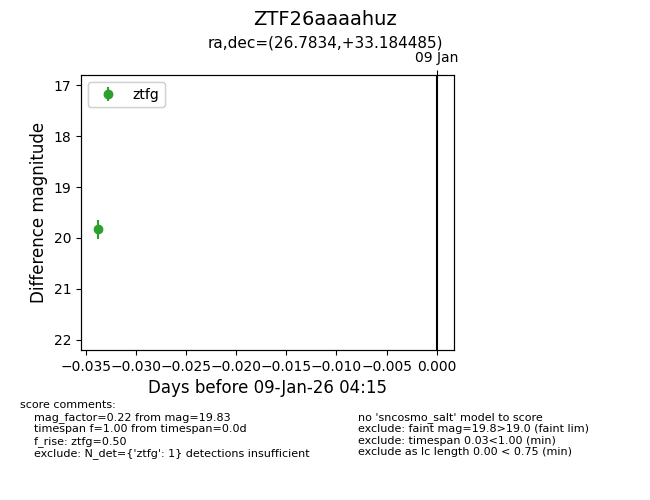
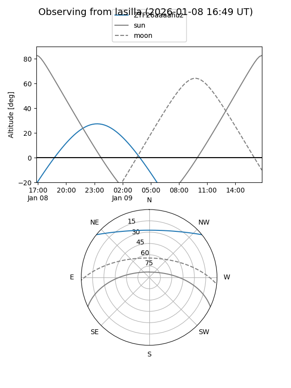
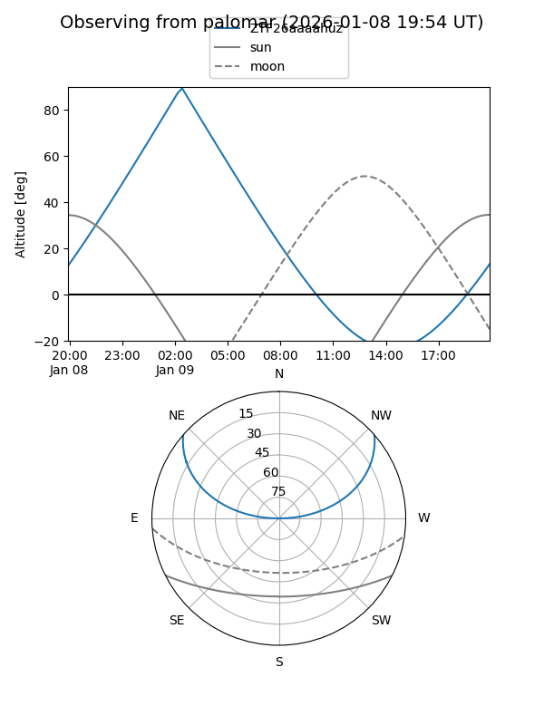

ZTF26aaaahuz
Target ZTF26aaaahuz at 2026-01-09 04:15
Aliases and brokers:
FINK:
Lasair:
ALeRCE:
alt names
ZTF26aaaahuz (ztf,fink_ztf)
Coordinates:
equatorial (ra, dec) = 26.7834,+33.18449
equatorial (HMS+DMS) = 01:47:08.01,+33:11:04.15
galactic (l, b) = (136.1482,-28.25388)
Flags:
Photometry:
last ztfg=19.83
1 ztfg detections
Lightcurve

Visibility


Additional plots